Ten candidate images establish the direction before the full collection is painted. Review the silhouettes at 48px, then compare the 32px and 64px reductions. Enlarged images open the preserved originals.
General Ifrit
Ancestry
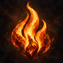
48px export preview
48px grayscaleA flame crest: the heritage identity, distinct from channeling or defense.
Exact candidate / export SHA-256
128 × 128 RGBA PNG
839637f60fa9a268db577ad549d45fae9b77884465ca6c47e3988c70c9193341
Export · Original
Fire Affinity
Channeling
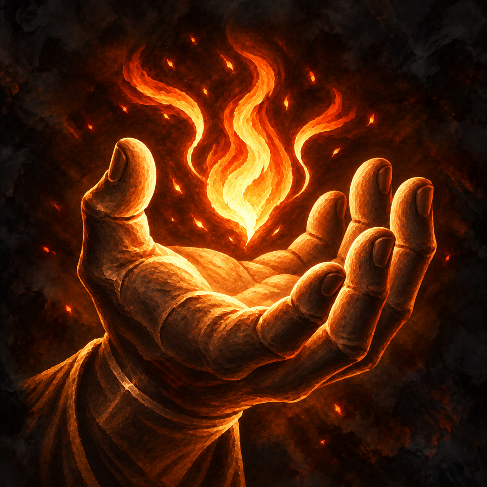
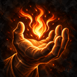
48px export preview
48px grayscaleA bronze hand gathers fire. Revised to keep the hand readable at 48px.
Exact candidate / export SHA-256
128 × 128 RGBA PNG
d5ef14e589d286ba39dc6ce8880f6ef3f8b4eb6454653c3d06c0ffe7543a4394
Export · Original
Fire Resistance
Defense
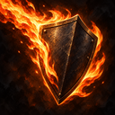
48px export preview
48px grayscaleA solid shield diverts flame; no claim of immunity.
Exact candidate / export SHA-256
128 × 128 RGBA PNG
731f529ddd1caf072b7fc77e440cb1b824d78729c83d5b8ff6e7bf2ba8692a8e
Export · Original
Elemental Strike
Four elements
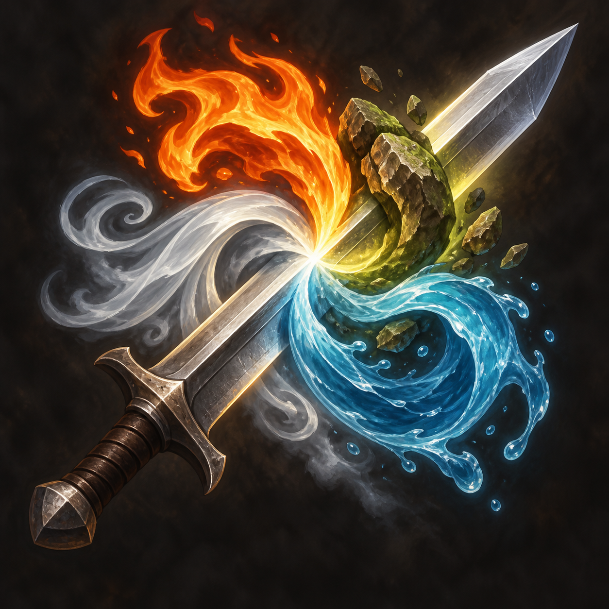
48px export preview
48px grayscale
A blade and four elemental forms. Review the earth/stone form at small size.
Exact candidate / export SHA-256
128 × 128 RGBA PNG
4ef61ba290be43fea8917141b2eb0a4ba7c38b7d45274a5a1cb7b3a9e29ffa0b
Export · Original
Hydraulic Maneuver
Water force parent
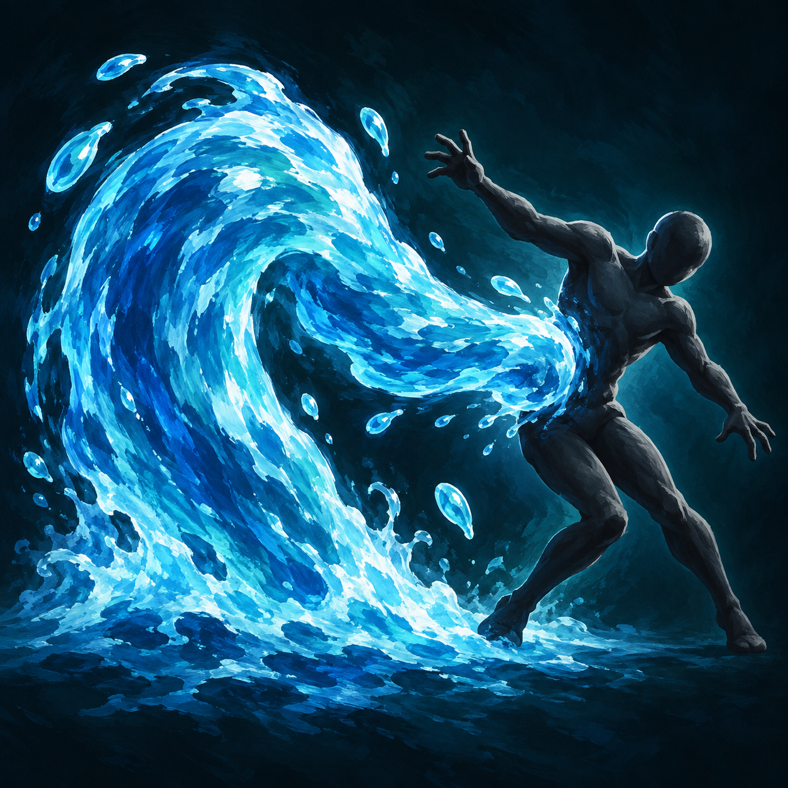
48px export preview
48px grayscale
Torso-height water force unbalances a target.
Exact candidate / export SHA-256
128 × 128 RGBA PNG
220226251a04ecb9e2fda4b8883aa8cabef3ceb3646d095f504c7ad3c0d9e397
Export · Original
Hydraulic Trip
Trip child
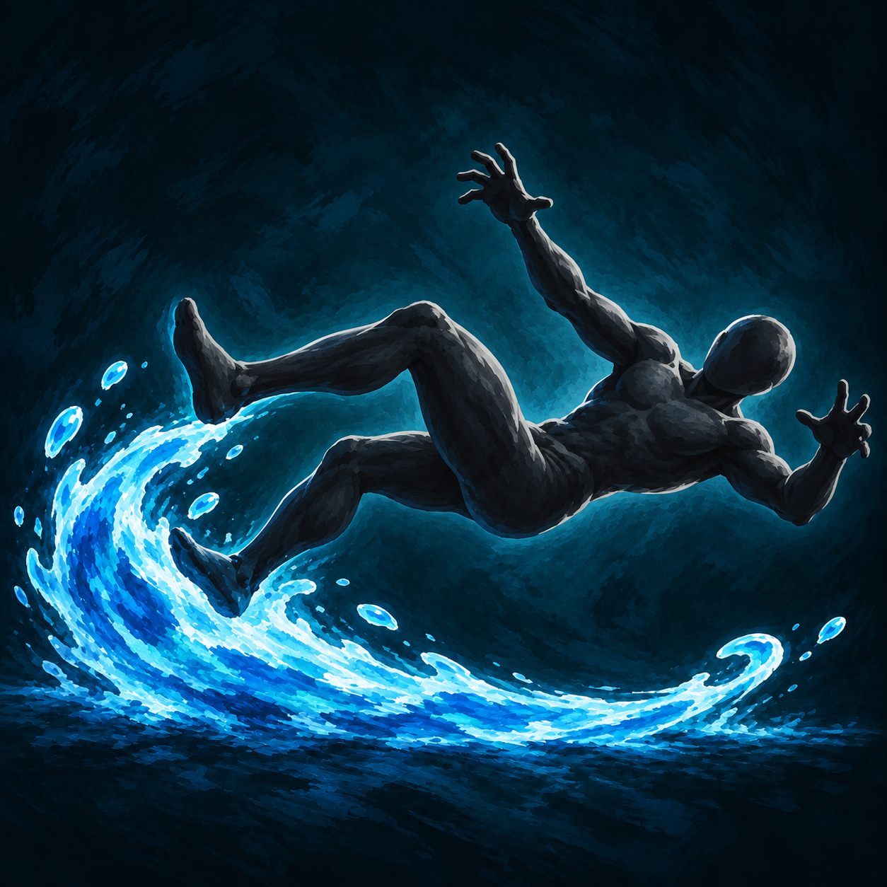
48px export preview
48px grayscale
Low water sweeps feet away; falling horizontal silhouette.
Exact candidate / export SHA-256
128 × 128 RGBA PNG
3d4052dd1bff02c9434857bd729b47d03998e7c6ec67520ad2b93e9aa2883de9
Export · Original
Teleport
Strategic travel
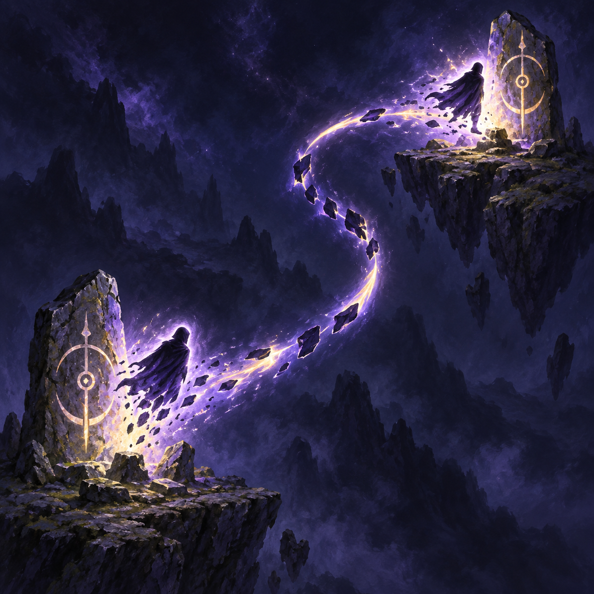
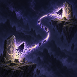
48px export preview
48px grayscaleSeparated anchors and a broken diagonal connection.
Exact candidate / export SHA-256
128 × 128 RGBA PNG
debe99749ebfd00c6b66307b2a113f0427d29abb095355b47435524b6f760858
Export · Original
Greater Teleport
Stable arrival
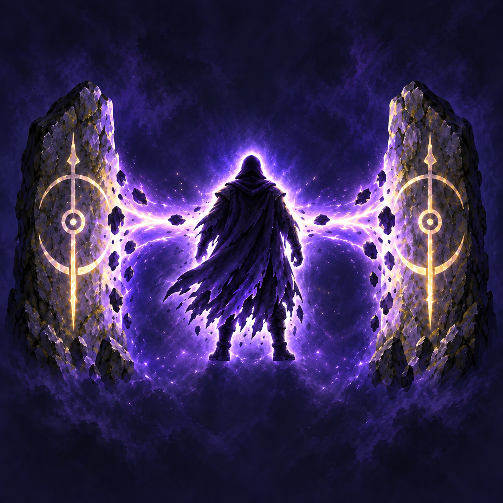
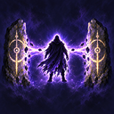
48px export preview
48px grayscaleSymmetric anchors and a centered traveler. UI-like gold brackets were removed.
Exact candidate / export SHA-256
128 × 128 RGBA PNG
0381ca8dff106fcff7173945a0cb08c96d34a0e65640c73b12b95e1ab043785a
Export · Original
Word Of Recall
Return to sanctuary
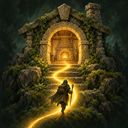
48px export preview
48px grayscaleOne rooted warm destination and an inward path; no deity-specific symbol.
Exact candidate / export SHA-256
128 × 128 RGBA PNG
5e0a4c5a5519abe46d026d7e5ccfd7be521655b3403e9b0caee149d0bc29e175
Export · Original
Rapid Reload
Mundane feat emblem
48px export preview
48px grayscale
Thin muted ring with stock, open barrel, ball and ramrod. Review whether this reads as loading at 48px.
Exact candidate / export SHA-256
64 × 64 RGBA PNG
5c3280145815f7b161602da161264ac1f43fb3ac3c4bf47ff907b0919a2aa9d3
Export · Original
Preserved project context
Accepted usable-action paintings remain untouched. These are reference exports, not new candidates.
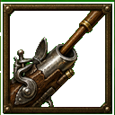
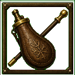
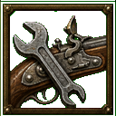
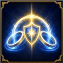
Native feat and lettering comparisons remain local in the supplied screenshot references; proprietary screenshots and fonts are not included in this page.
Firearm B / M / P prototype
The actual firearm selector now requests Kingmaker's native acronym rendering while retaining the original blueprint-based parameters. Native font/background/state are produced by the game. The underlying selected-feature sprites remain the historical fallbacks pending their own qualification. No approximate font image is shown here as native proof.
Current native UI captures, nested Rapid Reload presentation, character-sheet coverage, and the Wakizashi/Elven Branched Spear inspection are still pending. Approving these paintings does not approve those unresolved surfaces.